，点击可以出来主面板，然后可以打开常用的程序和显示所有程序，；
，点击可以出来主面板，然后可以打开常用的程序和显示所有程序，；Ubuntu 入门操作指南
作者：TeliuTe 来源：基础教程网
三、快速启动栏 返回目录 下一课桌面左边的程序按钮面板条也称为快速启动栏；
1、快速启动栏
1）快速启动栏在桌面的左边，包含常用的程序按钮，自己也可以添加和删除按钮；
2）最上面的是主按钮，点击可以出来主面板，然后可以打开常用的程序和显示所有程序，；
按键盘上的窗口键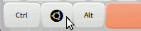也可以显示主面板；
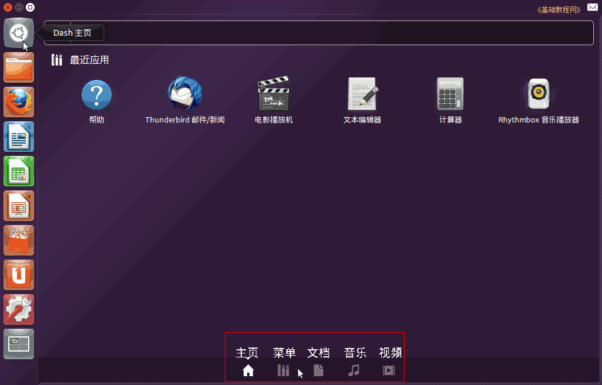
3）接下来是主文件夹按钮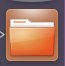，点击可以显示主文件夹窗口，这时把鼠标移到屏幕最上边，会显示程序的菜单栏，
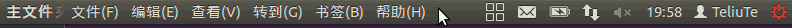
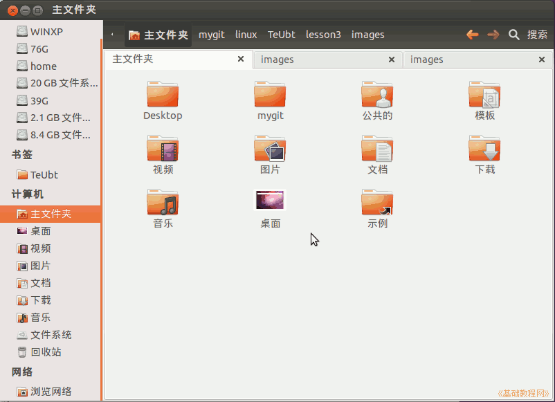
如果快速启动栏中的按钮左边，有一个白色的箭头图标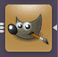，表示有打开的程序窗口，当前窗口右边还有一个三角标志；
4）接下来是火狐浏览器按钮，点击出现网页浏览窗口，第一次使用要在“编辑-首选项”中设置主页；
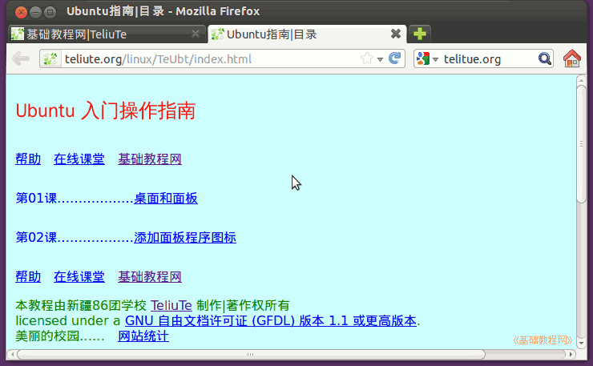
5）接下来是Libreo Office 的三个组件，分别是 Writer 文字处理 、Calc 电子表格和 Impress 演示文稿；
、Calc 电子表格和 Impress 演示文稿；
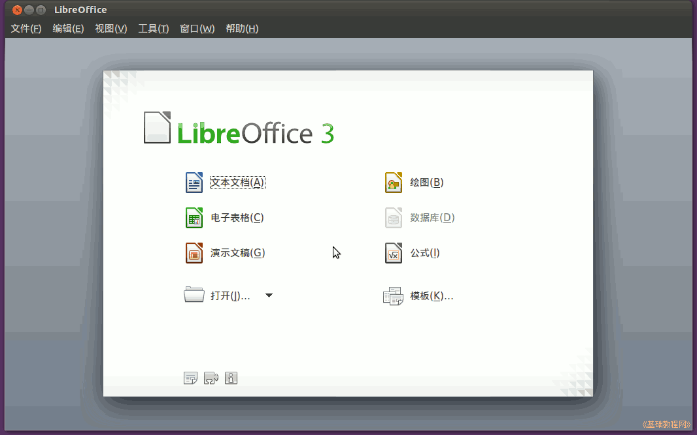
6）接下来是 Ubuntu 软件中心 ，在这里可以安装和卸载软件，还可以设置软件源；
，在这里可以安装和卸载软件，还可以设置软件源；
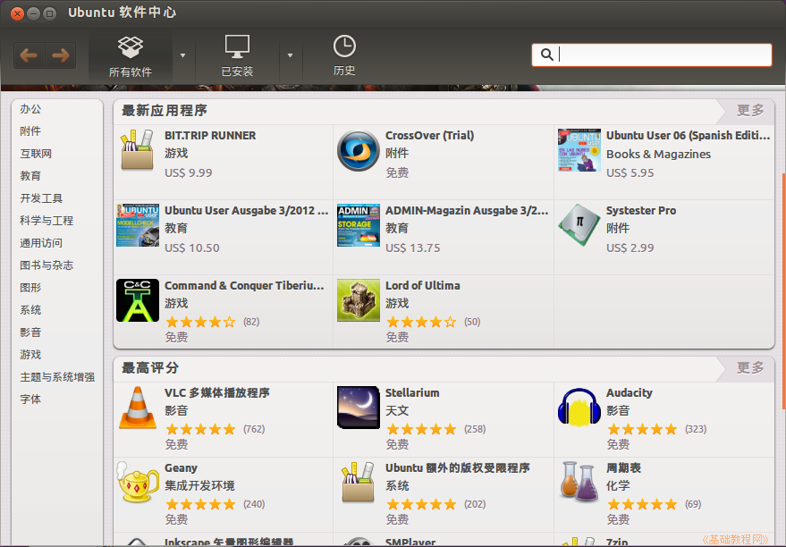
7）接下来是 Ubuntu One，是一个云存储器，可以把自己的文件存储到远端服务器上，需要注册一个账号；
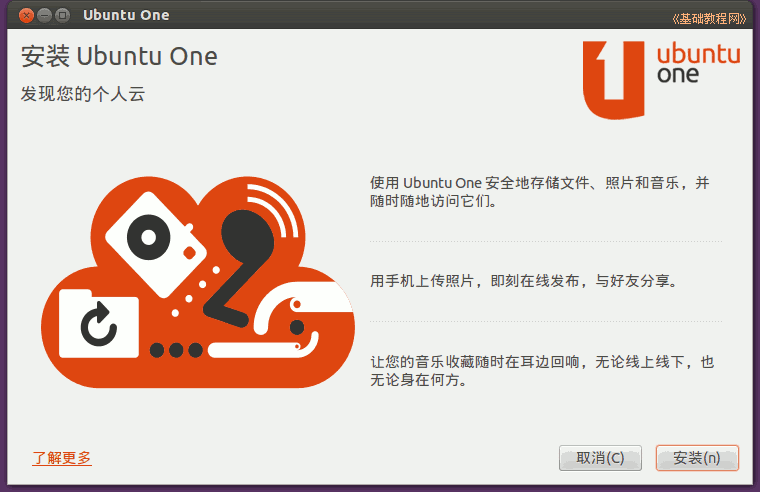
8）接下来是系统设置按钮，这里可以对系统各个方面进行设置；
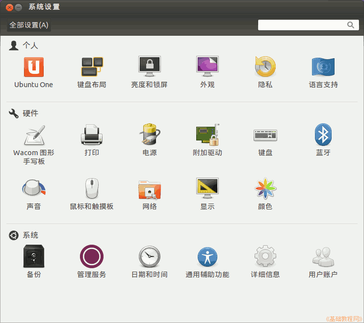
9）接下来是工作区切换器，点击可以在四个桌面之间切换，放置不同的应用程序，双击可以进入这个工作区；
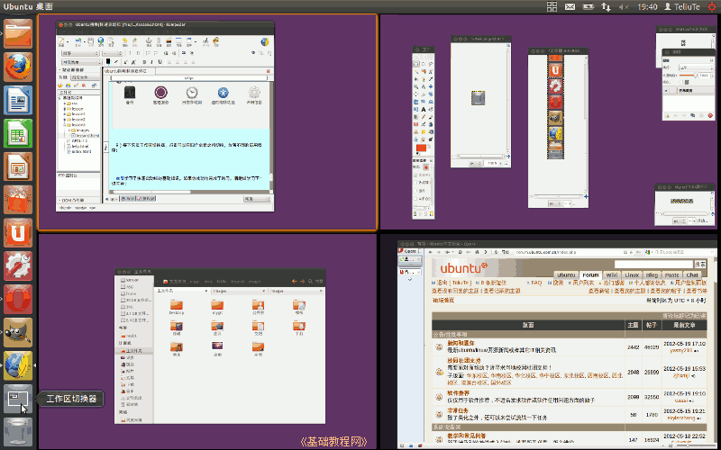
10）最下面是回收站图标，删除文件一般是“移动到回收站”，然后再进入回收站里删除；
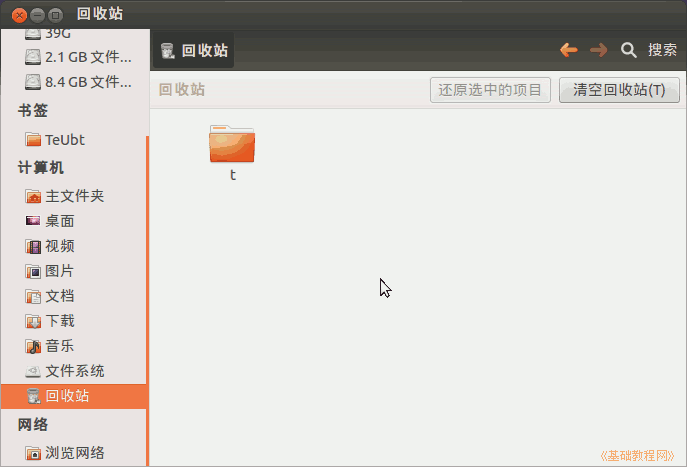
本节学习了快速启动栏的基础知识，如果你成功地完成了练习，请继续学习下一课内容；
本教程由86团学校TeliuTe制作|著作权所有
基础教程网：http://teliute.org/
美丽的校园……
转载和引用本站内容，请保留版权信息和本站链接。